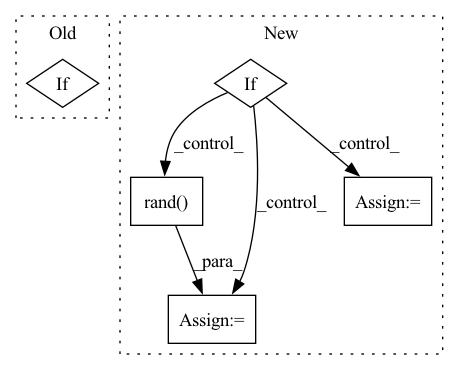

Pattern ID :21899

Before Change
return self.get_graph(idx).to(self.device)
elif return_type == "raw_features":
return self.graphs[idx]["node_feat"].to(self.device)
elif return_type == "targets":
return self.labels[idx].to(self.device)
def get_graph(self, idx):
After Change
def data_by_type(self, idx, return_type):
if return_type == "dgl_graph":
return self.get_graph(idx).to(self.device)
elif return_type == "raw_features":
return torch.tensor(self.graphs[idx]["node_feat"]).to(self.device)
elif return_type == "targets":
return self.labels[idx].to(self.device)
elif return_type == "positional_encoding":
eig_vals, eig_vecs = self.get_pos_enc(idx)
eig_vals = eig_vals.to(self.device)
eig_vecs = eig_vecs.to(self.device)
sign_flip = torch.rand(eig_vals.shape[0], device=self.device)
sign_flip[sign_flip >= 0.5] = 1.0
sign_flip[sign_flip < 0.5] = -1.0
eig_vals = eig_vals.unsqueeze(0).repeat(eig_vecs.shape[0], 1)
return torch.stack([eig_vals, eig_vecs], dim=-1)
def get_graph(self, idx):
In pattern: SUPERPATTERN
Frequency: 4
Non-data size: 5
Instances
Fragment ID: 69701126
Project Name: hannesstark/3dinfomax
Commit Name: 4a2329db44d0cff58807ec3a8ea9d6859ac15bb7
Time: 2021-07-02
Author: hannes.staerk@gmail.com
File Name: datasets/ogbg_dataset_extension.py
M Class Name: OGBGDatsetExtension
N Class Name: OGBGDatsetExtension
M Method Name: data_by_type(3)
N Method Name: data_by_type(3)
M Parent Class: GraphPropPredDataset
N Parent Class: GraphPropPredDataset
M File Name: datasets/ogbg_dataset_extension.py
N File Name: datasets/ogbg_dataset_extension.py
M Start Line: 36
M End Line: 39
N Start Line: 43
N End Line: 55
'>
Before Change
elif config["model"]["base"]["type"] == "gauss":
q0 = nf.distributions.DiagGaussian(latent_size,
trainable=config["model"]["base"]["learn_mean_var"])
elif config["model"]["base"]["type"] == "gaussian_mixture":
q0 = nf.distributions.GaussianMixture(config["model"]["base"]["params"]["n_modes"], latent_size,
trainable=config["model"]["base"]["learn_mean_var"])
else:
After Change
elif config["model"]["base"]["type"] == "gauss":
q0 = nf.distributions.DiagGaussian(latent_size,
trainable=config["model"]["base"]["learn_mean_var"])
elif config["model"]["base"]["type"] == "gaussian_mixture":
n_modes = config["model"]["base"]["params"]["n_modes"]
if "loc_scale" in config["model"]["base"]["params"]:
loc_scale = config["model"]["base"]["params"]["loc_scale"]
else:
loc_scale = 1.
loc = loc_scale * np.random.rand(n_modes, latent_size)
trainable = config["model"]["base"]["learn_mean_var"]
q0 = nf.distributions.GaussianMixture(n_modes, latent_size, loc=loc,
trainable=trainable)
else:
'>
Fragment ID: 69701135
Project Name: vincentstimper/resampled-base-flows
Commit Name: 1cb7d4d5fc27d857aa3cc59ef24d0720c3cfff20
Time: 2021-10-06
Author: vincent.stimper@gmail.com
File Name: larsflow/core.py
M Class Name: UCIFlow
N Class Name: UCIFlow
M Method Name: __init__(2)
N Method Name: __init__(2)
M Parent Class: NormalizingFlow
N Parent Class: NormalizingFlow
M File Name: larsflow/core.py
N File Name: larsflow/core.py
M Start Line: 482
M End Line: 504
N Start Line: 482
N End Line: 511
'>
Before Change
runs with success, but needs further validation and possibly optimization for lower runtime impact.
if drop_prob == 0. or not training:
return x
_, _, height, width = x.shape
total_size = width * height
clipped_block_size = min(block_size, min(width, height))
// seed_drop_rate, the gamma parameter
seed_drop_rate = gamma_scale * drop_prob * total_size / clipped_block_size ** 2 / (
(width - block_size + 1) *
After Change
((h_i >= clipped_block_size // 2) & (h_i < H - (clipped_block_size - 1) // 2))
valid_block = torch.reshape(valid_block, (1, 1, H, W)).to(dtype=x.dtype)
if batchwise:
// one mask for whole batch, quite a bit faster
uniform_noise = torch.rand((1, C, H, W), dtype=x.dtype, device=x.device)
else:
uniform_noise = torch.rand_like(x)
block_mask = ((2 - gamma - valid_block + uniform_noise) >= 1).to(dtype=x.dtype)
block_mask = -F.max_pool2d(
'>
Fragment ID: 69701134
Project Name: feng-lab/pytorch-image-models
Commit Name: 1904ed8fecdb3f37818378421350315d2abf1224
Time: 2020-05-13
Author: rwightman@gmail.com
File Name: timm/models/layers/drop.py
M Class Name: AnonimousClass
N Class Name: AnonimousClass
M Method Name: drop_block_2d(7)
N Method Name: drop_block_2d(6)
M Parent Class:
N Parent Class:
M File Name: timm/models/layers/drop.py
N File Name: timm/models/layers/drop.py
M Start Line: 25
M End Line: 62
N Start Line: 26
N End Line: 69
'>
Before Change
weights = torch.Tensor(size)
self.weights = torch.nn.Parameter(weights)
if constant_factor:
torch.nn.init.ones_(tensor=self.weights) * constant_factor
else:
torch.nn.init.uniform_(tensor=self.weights, a=0.0, b=1.0)
After Change
super().__init__()
self.size = size
if constant_factor:
weights = torch.ones(size=[size, 1]) * constant_factor
self.weights = torch.nn.Parameter(weights)
else:
weights = torch.rand(size=[size, 1]) + 0.5
self.weights = torch.nn.Parameter(weights)
def forward(self, x):
'>
Fragment ID: 69701132
Project Name: jeshraghian/snntorch
Commit Name: 0344c5d5359df783f5c5f51cfafa77e6c072d0de
Time: 2022-12-03
Author: alexanderhenkes1@gmail.com
File Name: snntorch/_layers/graded_spikes.py
M Class Name: GradedSpikes
N Class Name: GradedSpikes
M Method Name: __init__(3)
N Method Name: __init__(3)
M Parent Class: torch.nn.Module
N Parent Class: torch.nn.Module
M File Name: snntorch/_layers/graded_spikes.py
N File Name: snntorch/_layers/graded_spikes.py
M Start Line: 10
M End Line: 18
N Start Line: 11
N End Line: 18